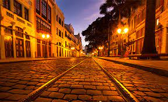
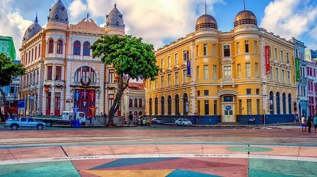

A Rua do Bom Jesus é uma das ruas mais históricas e charmosas do Recife Antigo. Localizada na cidade de Recife, no estado de Pernambuco, Brasil, esta rua possui uma rica história que remonta aos primórdios da colonização portuguesa. Originalmente conhecida como "Rua dos Judeus," a Rua do Bom Jesus desempenhou um papel significativo na história do Brasil, especialmente no que diz respeito à comunidade judaica. Durante o período colonial, muitos judeus sefarditas se estabeleceram na região, buscando refúgio da Inquisição em Portugal. A presença judaica na Rua do Bom Jesus é lembrada pelo histórico Kahal Zur Israel, a primeira sinagoga das Américas, que foi construída nesta rua em 1636. Além de seu valor histórico, a Rua do Bom Jesus também é conhecida por sua arquitetura encantadora. As fachadas coloridas dos edifícios coloniais se alinham ao longo da rua de paralelepípedos, criando um cenário pitoresco que atrai visitantes e turistas. Os restaurantes, lojas de artesanato e galerias de arte ao longo da rua oferecem uma experiência única, permitindo que os visitantes mergulhem na cultura local. À medida que o sol se põe, a Rua do Bom Jesus ganha vida com uma atmosfera vibrante. Bares e restaurantes oferecem música ao vivo e uma variedade de pratos da culinária pernambucana, tornando-a um local popular para sair à noite. Em resumo, a Rua do Bom Jesus é uma joia do Recife Antigo que combina história, arquitetura e cultura em um único local. É um lugar onde o passado e o presente se encontram, proporcionando aos visitantes uma experiência memorável e enriquecedora. Se você estiver visitando o Recife, não deixe de explorar esta rua fascinante e todas as suas maravilhas.
A Praça Rio Branco, também conhecida como Praça do Marco Zero, é um espaço de lazer e cultura localizado no coração do Recife Antigo, na cidade de Recife, Pernambuco, Brasil. Esta praça é um dos locais mais emblemáticos e simbólicos da cidade, desempenhando um papel importante na vida dos moradores locais e atraindo visitantes de todo o mundo. O apelido "Praça do Marco Zero" faz referência ao fato de que o Recife é considerado o ponto de partida para a contagem das distâncias rodoviárias no Brasil. Um grande marco de concreto, com inscrições das principais cidades do país e suas respectivas distâncias do Recife, está localizado na praça, simbolizando esse ponto de referência. A Praça Rio Branco é um local onde a história e a modernidade se fundem harmoniosamente. Ela abriga uma série de edifícios históricos restaurados que remontam aos tempos coloniais, incluindo a imponente Torre Malakoff, que já serviu como observatório e hoje é um espaço cultural. A praça também é cercada por diversos museus, galerias de arte e centros culturais, tornando-a um centro de atividades culturais e artísticas. Além disso, a Praça Rio Branco é um espaço de lazer e convívio social. Os moradores e visitantes frequentemente se reúnem aqui para relaxar, apreciar a paisagem à beira do Rio Capibaribe e desfrutar de eventos culturais ao ar livre, como apresentações musicais e feiras de artesanato. Outro destaque da praça é o Marco Zero, uma escultura circular no chão que marca o ponto exato de referência geográfica do Recife. É um local popular para tirar fotos e é considerado um marco importante para os turistas que visitam a cidade. Em resumo, a Praça Rio Branco, também conhecida como Praça do Marco Zero, é um espaço multifacetado que combina história, cultura, lazer e convívio social. É um lugar essencial para quem deseja explorar e vivenciar a rica herança cultural e a atmosfera vibrante do Recife Antigo.
